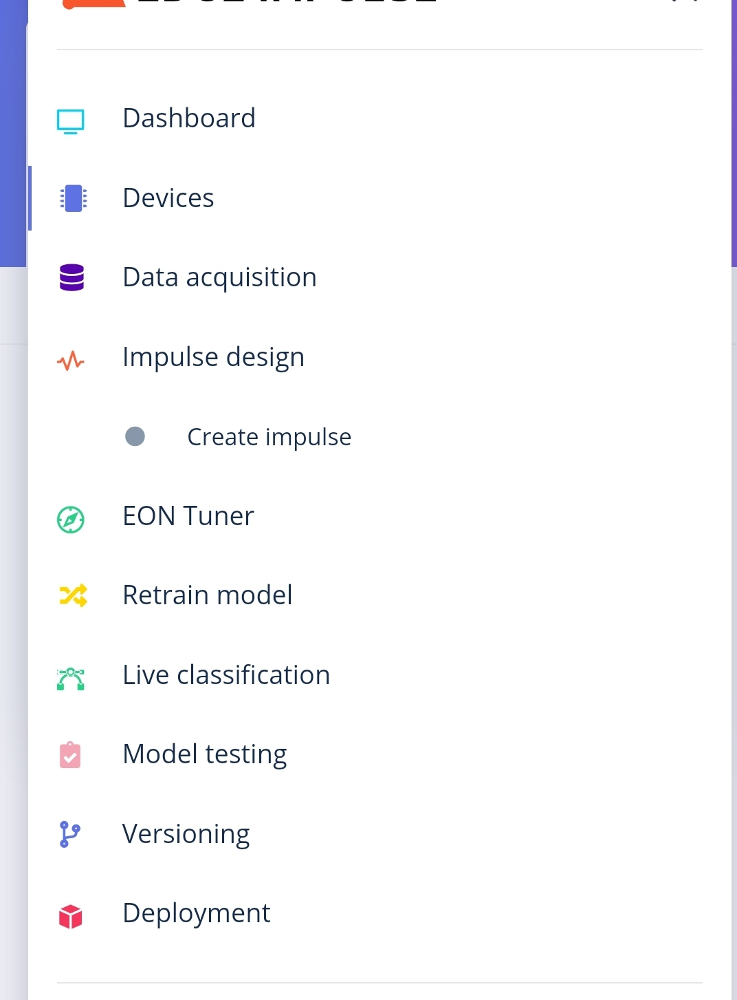
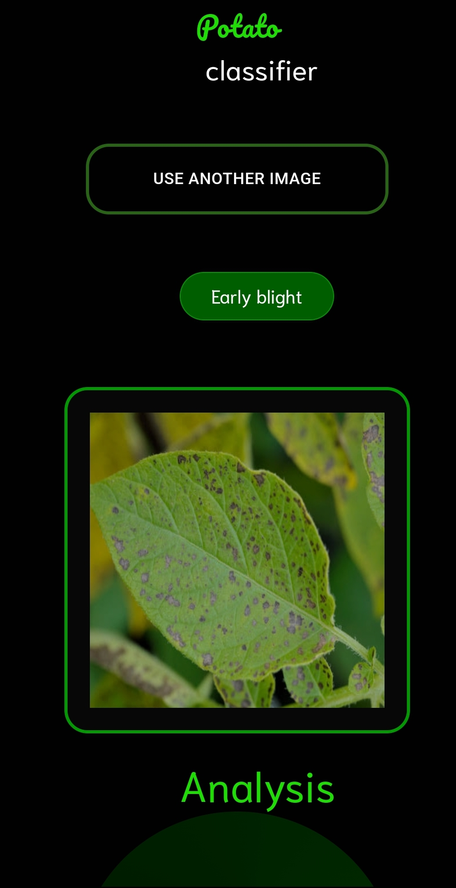
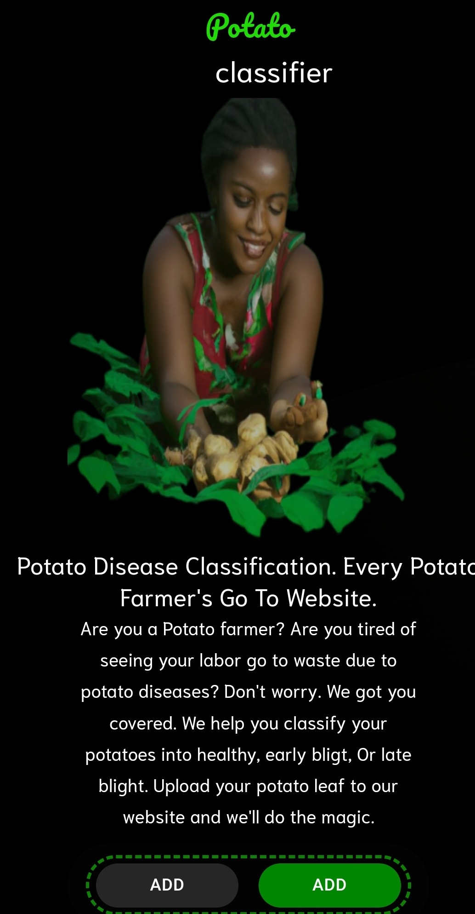
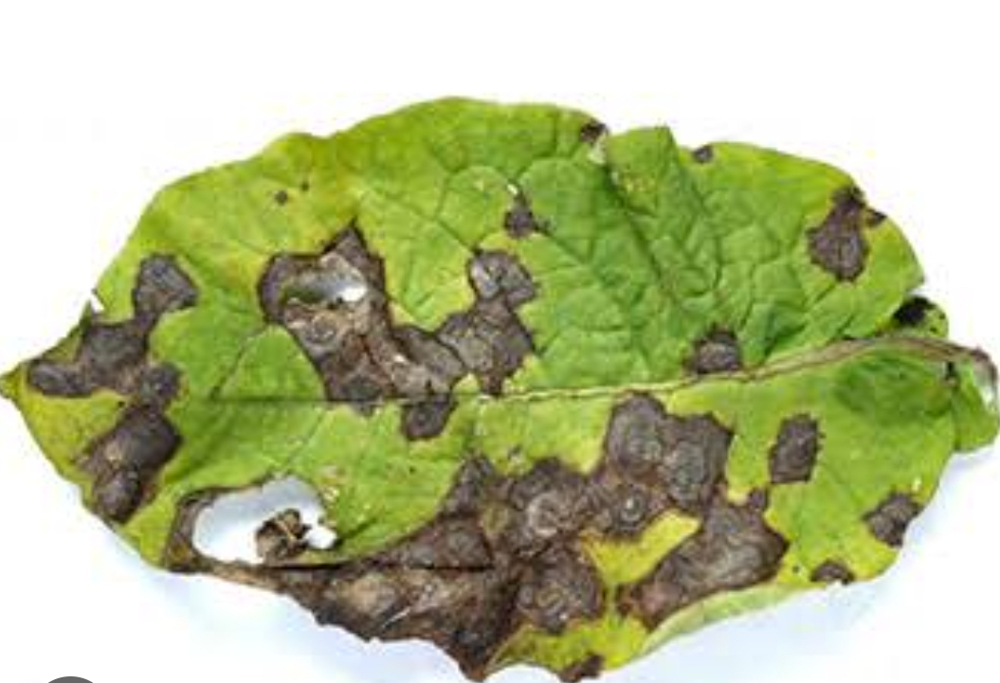

Technologies Used: AI, ML, Python, TensorFlow, OpenCV, Flask
1. Curated a diverse dataset with images of potato leaves, emphasizing blight, rust, and leaf spot to ensure model robustness.
2. Utilized TensorFlow to implement a Convolutional Neural Network (CNN) architecture for image classification.
3. Conducted extensive data preprocessing, including image normalization and augmentation, to enhance model generalization.
4. Trained the model using hyperparameter optimization, achieving high accuracy in disease identification.
1. Developed a responsive and intuitive web interface using Flask for seamless interaction with the Leaf-Diagnosis Monitoring System.
Link to the web app2. Implemented server-side and client-side validations to ensure efficient user input handling and enhance user experience.
3. Real-time processing of uploaded images with instant display of blight percentage on potato leaves for quick assessment.
4. User-friendly dashboard providing clear insights into disease identification and severity.
1. Integrated a comprehensive database of information about common pests and diseases found in plants.
2. The system recommends specific remedies or treatments based on the identified pests or diseases, providing actionable insights to farmers.
1. Implemented storage and analysis of historical data, allowing users to track the progress of plant health over time.
2. Facilitates informed decision-making for future crop management strategies by providing trends and insights from past data.